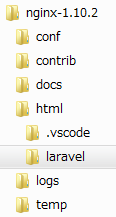

なお、
"repositories": [
{
"type": "composer",
"url": "https://packagist.org"
},
{ "packagist": false }
]
（例）追加した結果（環境依存の値もあると思われますので、自身の環境のcomposer.json）を元にしてください）
{
"name": "laravel/laravel",
"description": "The Laravel Framework.",
"keywords": ["framework", "laravel"],
"license": "MIT",
"type": "project",
"require": {
"php": ">=5.6.4",
"laravel/framework": "5.3.*"
},
"require-dev": {
"fzaninotto/faker": "~1.4",
"mockery/mockery": "0.9.*",
"phpunit/phpunit": "~5.0",
"symfony/css-selector": "3.1.*",
"symfony/dom-crawler": "3.1.*"
},
"autoload": {
"classmap": [
"database"
],
"psr-4": {
"App\\": "app/"
}
},
"autoload-dev": {
"classmap": [
"tests/TestCase.php"
]
},
"scripts": {
"post-root-package-install": [
"php -r \"file_exists('.env') || copy('.env.example', '.env');\""
],
"post-create-project-cmd": [
"php artisan key:generate"
],
"post-install-cmd": [
"Illuminate\\Foundation\\ComposerScripts::postInstall",
"php artisan optimize"
],
"post-update-cmd": [
"Illuminate\\Foundation\\ComposerScripts::postUpdate",
"php artisan optimize"
]
},
"config": {
"preferred-install": "dist"
},
"repositories": [
{
"type": "composer",
"url": "https://packagist.org"
},
{ "packagist": false }
]
}
以上